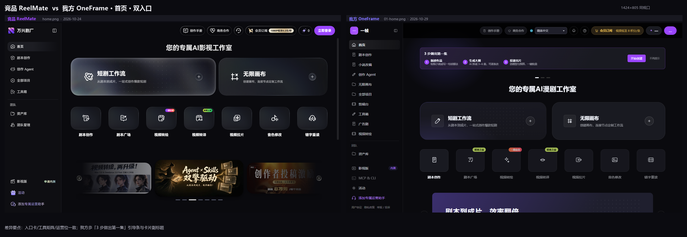
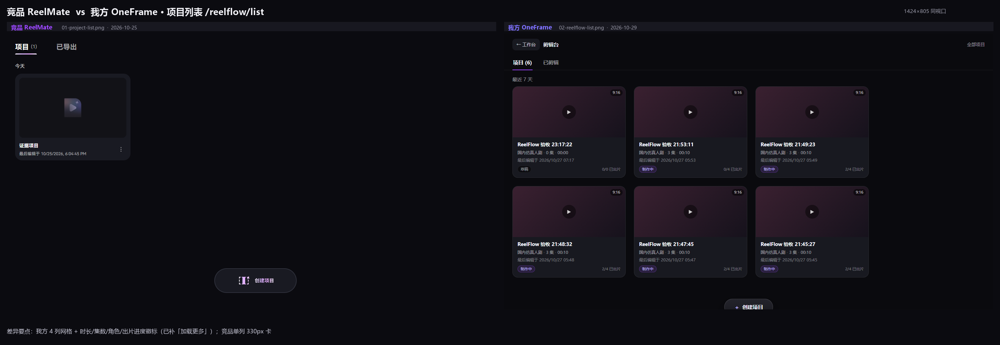
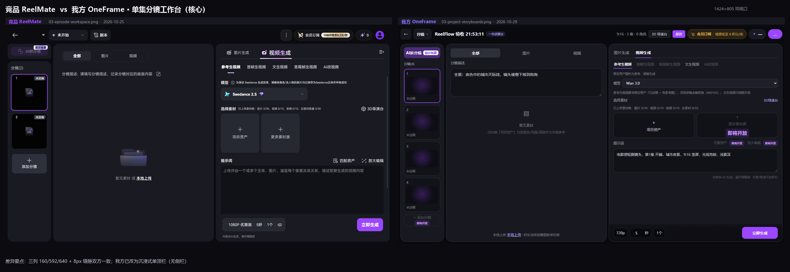
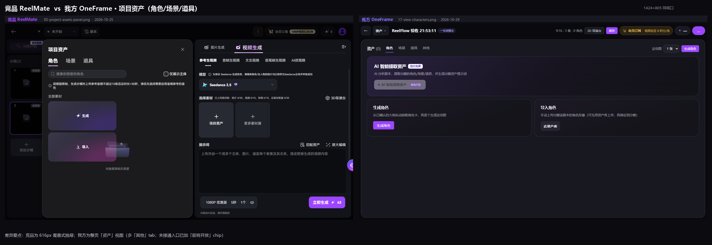
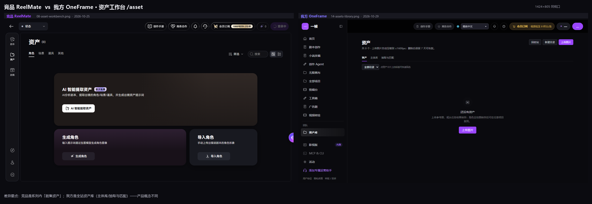
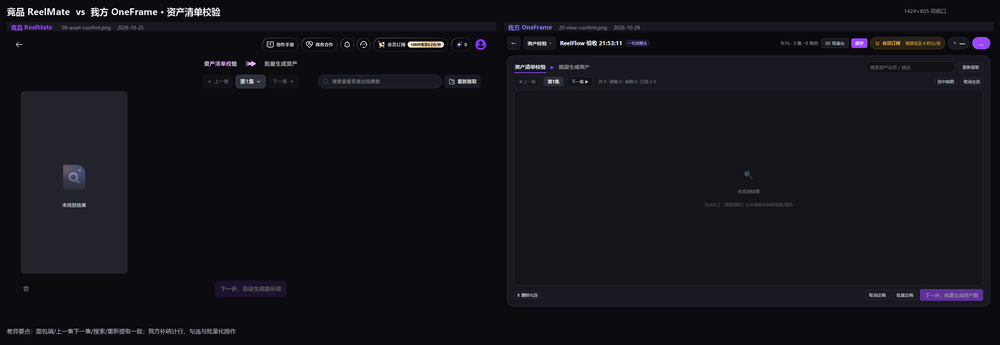
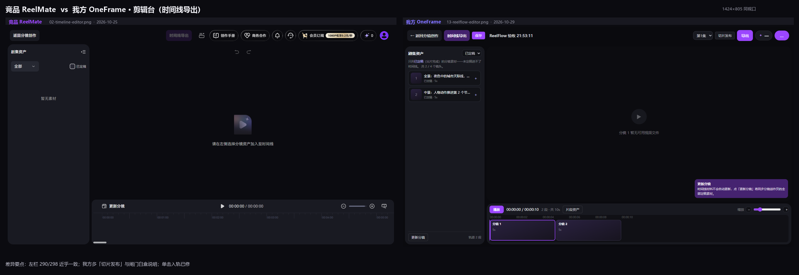
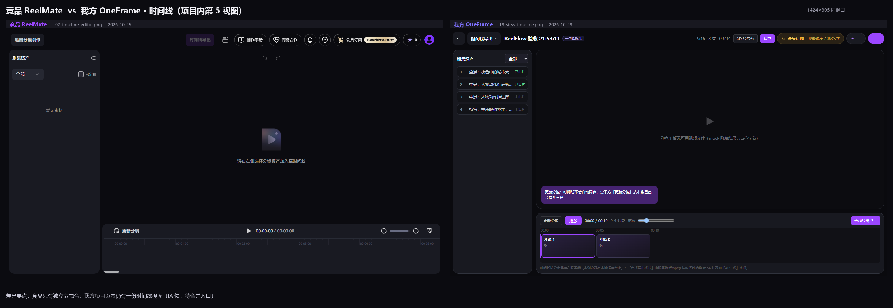
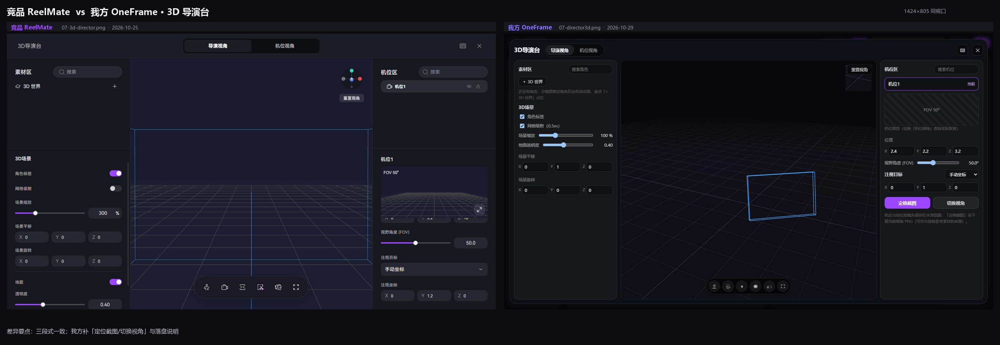
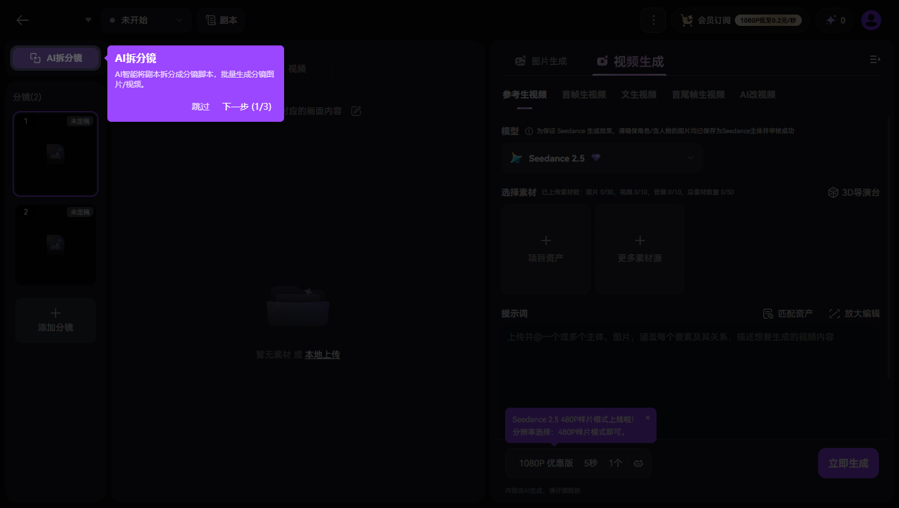

一帧 OneFrame × 竞品 ReelMate · 短剧工作流 UI 对比
v1.1 · 2026-10-29（对齐实施后）· 竞品证据 2026-10-25（1424×805 实测）· 我方 2026-10-29 同视口现抓（对齐前 05:3x / 对齐后 06:3x）
1424 宽 ✅
单集工作台可用宽度
对齐前 1152（侧栏 240）→ 对齐后与竞品 1408 内容区一致
640 ✅
右生成台宽度
对齐前 460 → 对齐后与竞品 640 一致
733 ✅
可用高度
对齐前 661（双顶栏）→ 对齐后单顶栏 64，与竞品一致
~90 次
30 镜的逐镜绑定+生成点击（未做）
竞品「匹配资产」1 击替代；本轮仅把入口标成「即将开放」
5 处 ✅
disabled 占位已透明化
匹配资产 / 放大编辑 / 更多素材源 / 添加分镜 / AI 提取资产 → 均带「即将开放」chip
6 / 12
行为对齐完成度
单击入轨·重生成确认·加载更多·已剪辑·chip·新建回流；余 6 项见报告 §10.3
v1.1 一句话：空间与视觉语言已"逐像素是同一个产品"（160/592/640、单顶栏、8px 缝隙）；剩下的是行为与自动化——把「匹配资产」的 90 次点击、批量投递的 mode、两套「已出片」口径修掉，才算真正对齐"怎么做"。
01 · 首页双入口

左：竞品 ReelMate（2026-10-24） · 右：我方 OneFrame（2026-10-29）1424×805 同视口
竞品
- 主卡 640×160 r32（渐变+内发光+1px 描边），副卡 480
- 无全局引导条，教学放在工作台 coach-mark
- 工具矩阵 7 卡 +
上新/即将上线 - 价格广告位常驻右上
会员订阅 1080P低至0.2元/秒
我方
- 同双入口卡；卡内多一行副标题
- 顶部「3 步做出第一集」引导条（可「不再提示」）
- 同 7 卡同序；徽标
即将上线/一局会员 - 价格位
视频低至8积分/条
结论：对齐。引导条是加分项，但在 805 高下占 76px 且只能本机隐藏；建议首访一次后收起，项目内用 coach-mark 接力。
02 · 项目列表 /reelflow/list

左：竞品 330 单列卡 + FAB · 右：我方 4 列卡 + 出片进度同日同视口
竞品
项目 (N) / 已导出 双 tab- 330×250 卡：缩略图 310×140、`最后编辑于`、⋮、hover `编辑`
- 空态一句话 + 底部胶囊 FAB（236×68）
我方
- 同双 tab；多 `返回工作台 / 剪辑台` 面包屑
- ≈300×250 × 4 列：9:16、类型·集数·时长、`草稿`、
0/3 已出片 - 列表硬截断 48 条无分页（P1 债）
结论：我方卡片信息更直接回答"做到哪了"，建议保留；补 hover 编辑/⋮，并加分页。
03 · 单集分镜工作台（核心页）

左：竞品 160/592/640 三列 · 右：我方 176/492/460 + 全站侧栏 240 + 双顶栏像素扫描实测
| 区域 | 竞品（实测） | 我方（实测） | 差异 |
|---|
| 顶栏 | 单层 64：← + 未开始▾ + 剧本 | 双层 128：全局头 + ← + 分镜▾ + 项目名 + meta/3D/保存 | 阶段表达 + 少 64px |
| 分镜条 | 160；AI拆分镜 136×32 + 首次免费；卡 128×128；+添加分镜 可用 | 176；AI拆分镜+首次免费；卡≈152；+添加分镜 disabled | 可用性 |
| 素材区 | 592；分镜描述: 只读 + 铅笔；空态 暂无素材 / 或 本地上传 | 492；分镜描述 直接可编辑 + 指引文案；本地上传 重复渲染 | −100px；文案 bug |
| 生成台 | 640：5 模式 / 模型 / 配额 / 两张 140×144 卡 / 提示词 600×300 / 底栏 1080P优惠版…立即生成 ✦63 | 460：同结构；匹配资产·放大编辑 disabled；图片生成 为 EmptyState | −180px / −28% |
结论：骨架对齐；差在"把宽度留给操作密度最高的生成台"。这张页是"像不像"的判定页，右台 640→460 是体感最大的一处。
04 · 项目资产（角色/场景/道具）

左：竞品 616 宽覆盖式抽屉 · 右：我方整页「资产」视图抽屉保留工作台上下文
竞品
- 覆盖式抽屉 616 宽，背后压暗，不打断三列
- 3 tab + 搜索 +
仅展示主体 + 音频限制提示 - 空态：
✦ 生成（紫渐变）/ ⤓ 导入（紫→粉）两卡
我方
- 整页视图（picker 切走，回分镜再点 2 次）
- 4 tab（多「其他」）+ 定妆图张数下拉
- AI 提取大卡「首次免费」但 disabled，副标题自认"后端链路建设中"
结论：形态差异影响上下文保持 —— 建议项目资产改成右侧抽屉，整页视图留给资产库。搜索框未绑定、缺 仅展示主体 待补。
05 · 资产库（我方）vs 剧集资产（竞品）

左：竞品 /asset（系列内，72 宽三视图） · 右：我方 /assets（全站库，三 tab）概念不同的两个产品能力
结论：不是缺页。竞品把"剧集资产"放在项目上下文，我方拆成"全站库 + 项目内资产视图"，更适合多项目复用角色。建议补竞品的 筛选 / 网格-列表切换 / 三卡空态。
06 · 资产清单校验

左：竞品（空态禁用 CTA） · 右：我方（统计行 + 全选 + 批量定稿/删除）我方更完备
对齐且我方更强。唯一文案差异：竞品两步「下一步，自动生成提示词 → 批量生成资产」，我方合并成「下一步，批量生成资产图」——建议注明"将自动生成提示词"。
07 · 剪辑台（时间线导出）

左：竞品 298 剧集资产 + 884×497 播放器 + 1102×164 时间线 · 右：我方三区 + 闸门说明 + 切片发布同构
竞品
- 左栏
全部▾ + 已定稿 复选 更新分镜 显式同步 + tooltip 明说"不会自动更新"- 导出面板 ❌ 从未取证（点了没反应）
我方
- 左栏写明"只列已定稿……共 2/4 个镜头"（白盒闸门）
更新分镜 + 700ms 自动保存 + 导出→下载 mp4 闭环- 另有
切片发布 / 片段资产 - 但左栏写"点击加入"、单击实际不生效（P0-4）
08 · 项目内「时间线导出」视图（我方独有）

同一能力两个入口：项目页时间线 vs 独立剪辑台两套闸门口径不一致
IA 债：项目页按"有 video_task_id"算已出片，剪辑台按 status===5。建议项目页该视图改为"预览 + 去剪辑台"入口，删除项目内合成按钮。
09 · 3D 导演台

左：竞品三段式（359/704/359） · 右：我方同构 + 定位截图/切换视角我方补了「定位截图→首帧」闭环
结构对齐；参数项一致（角色标签/网格吸附/缩放/平移/旋转/地面透明度）。我方多 定位截图（存当前视角作首帧参考）+ 切换视角，建议保留并写进产品说明。
附 · 竞品首访 coach-mark（引导范式）

竞品 2026-10-25 首访引导（第 1/3 步，锚点 AI拆分镜）页面整体压暗，紫色气泡 + 跳过 / 下一步
竞品的教学发生在动作旁边；我方是首页引导条 + 各页空态文案。建议补 coach-mark（锚 AI拆分镜 / 项目资产 / 更新分镜 三点），把首页引导条改为"首访一次后收起"。同一张图还露出一处一次性运营公告条（我方缺公告位）。
改进清单（节选，完整版见 Markdown §7）
| 优先级 | 问题 | 改法 | 验收 |
|---|
| P0 | 批量投递不带 mode：选「文生视频」后批量按默认参考模式跑，30 镜全 400105，需逐镜重投 +60 步 | 批量请求体补 mode，与单镜同源；批量前预检未定稿/无参考镜头 | 选文生视频批量 3 镜全成功 + e2e 断言 |
| P0 | 两套"已出片"口径：项目页看在途，剪辑台不认，用户白等一次导出 | 统一 status===5 && video_task_id；项目页区分"已出片/在途" | 在途镜头不进剪辑台，项目页显示"在途" |
| P0 | 匹配资产 disabled：逐镜 2 步绑定，30 镜 ~90 次点击 | 先做前端 v0.5（提示词/主体匹配预勾选），后端接组合任务 | 一镜从"点不动"变"已预选 2 个资产" |
| P0 | 剪辑台"点击加入"不生效：文案与行为矛盾 | 单击即入轨，或三处文案改为"拖入/回车" | 首用单击入轨成功 |
| P1 | 空间债：侧栏 240 + 双顶栏 | 工作台/剪辑台：侧栏折叠 64（hover 展开）+ 顶栏合并 | 可用宽 ≥1380 / 高 ≥720（对比截图复测） |
| P1 | 两套时间线 / 列表 48 截断 / 已导出 名不符实 / 5 个 disabled 占位 / 抽屉搜索未绑定 | 合并入口、加分页、接真导出记录、改"即将开放"chip、绑定搜索 | 逐项可点可查 |
| P2 | 提示词库、coach-mark、状态徽标统一、面板材质 token、可访问性、窄屏 | 见 Markdown §7 表 14–20 | — |